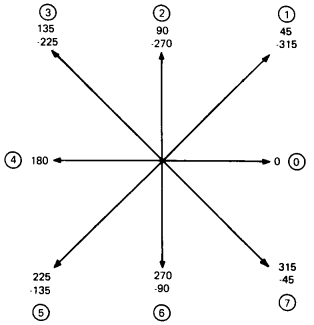

| Chapter 6 | Contents | Chapter 8 |
ReGIS text commands let you draw characters in different sizes, positions, and orientations. You can use characters from the terminal's built-in character sets, or you can design and load your own set (Chapter 8).
Text commands start with the letter T. There are 10 options and arguments for text commands. You can use text strings with many of these options.
With two exceptions, the values you select with these options remain in effect until you define new values. The exceptions are temporary write controls and temporary text controls.
Temporary write control values only remain in effect for the text command you use them with.
Temporary text controls have specific start and end options. ReGIS processes all values between the start and end options as part of the temporary text control.
You use the text command options to select the size and form of characters. The terminal uses the same basic method to draw these characters, no matter what size and form you select.
Selects the character from a stored character set.
Scales the character according to multiplication and size values.
Orients the character with the tilt values.
Draws the character into the bitmap. You can then use the PV spacing value or position command to reposition other characters.
All characters follow a specific format. The size of a stored character cell is 80 pixels (8 pixels wide × 10 pixels high).
Figure 7-1 shows examples of 8 × 10 character formats. All characters are right-justified within the format. When the terminal starts to draw a character, the upper-left pixel of the 8 × 10 cell is at the cursor position.
|
The terminal uses the cursor position at the start of a character as the pivot point for drawing the character on the screen. For example, a character drawn in the normal orientation (left to right on a straight line, with no tilt) appears below and to the right of the cursor.
If the character is tilted 180 degrees, it appears above and to the left of the cursor. The starting cursor position is always the pixel value at the upper-left point of the stored character form. All pivoting occurs at that point.
You use text strings to draw text characters. You use characters from the terminal's built-in character sets, or you can design and load a set (Chapter 8). All the built-in sets have 94 characters, except the ISO set. The ISO set has 96 characters.
| Built-In Character Sets |
|---|
| ASCII |
| ISO Latin Nr 1 supplemental graphic |
| DEC Supplemental Graphic |
| DEC Special Graphic |
| DEC Technical |
| National replacement character (NRC) sets (14 sets) |
ReGIS only recognizes four control characters in text strings. ReGIS ignores other control characters. For example, ReGIS treats the semicolon (;) and the at sign (@) as text characters in a text string. Outside text strings, the semicolon is a command to resynchronize ReGIS, and the at sign indicates macrographs (Chapter 9).
You can use the following four control characters in a text string.
| Carriage return | CR | Returns the cursor to the horizontal position where the current text writing command started. |
| Line feed | LF | Moves the cursor down one line in the same column. |
| Backspace | BS | Moves the cursor back one character position. You can use BS to overstrike a character. |
| Horizontal tab | HT | Moves the cursor forward one character position, using the current text spacing value. |
You use the following format for a simple text string command, without any options.
T'<text string>'
where
T identifies a text command.
' ' are single or double quotation marks that enclose the text string. You must use the same type of quotation mark at the start and end.
<text string> are the 7- or 8-bit characters to draw.
You enclose a text string with a set of quotes ('<text>'), or double quotes ("<text>"). You can use one type of quote to enclose the text string, and the other type within the string.
Examples
Some text strings may require both types of quotes within the string. You can use two quote marks in a row, so ReGIS recognizes one as a text string item, and not the end of the text string. The two quote marks must be next to each other (no spaces).
Examples
You can use a comma to concatenate two strings enclosed by the same type of quotes. You place the comma between the strings.
Examples
With a comma
"Stop ","Here" appears on the screen as Stop Here
Without a comma
"Stop ""Here" appears on the screen as Stop "Here
The character set option lets you select which set to use for a text string. When you enter ReGIS, the terminal uses the ASCII character set and the ISO Latin-1 supplemental graphic set.
NOTE: You should be familiar with how the terminal stores and uses character sets (Volume 1, Chapter 2). In ReGIS mode, the terminal accesses character sets similar to the way it does in text mode. However, in ReGIS mode, the terminal uses a different in-use table. The text in-use table can contain different character sets from the ReGIS in-use table.
You use the following format for selecting a character set.
T(A<0 to 3>)
where
A identifies a character set option. 'A' stands for "alphabet".
<0 to 3> is a number that identifies the character set to use.
| 0 | Selects one or more of the terminal's built-in character sets (such as ASCII and ISO Latin-1 supplemental graphic). |
| 1, 2, or 3 | Selects a set you can load into the terminal. This set can have up to 96 characters, but can only include 7-bit characters. (See Chapter 8.) |
ReGIS uses only one 8-bit character code table to store the character set you select for alphabet 0 (A0). This code table has a left half (GL) for 7-bit characters, and a right half (GR) for 8-bit characters.
When you enter ReGIS, the terminal automatically maps the ASCII character set into GL and the ISO Latin-1 supplemental graphic set into GR. You can select a character set for GL or GR by using the L or R suboptions as follows.
You use the L suboption to map one of the terminal's built-in character sets into the left half (GL) of the in-use table. You can only use this suboption when you select alphabet 0.
The format for the text command with the L suboption is as follows.
T(A0(L"<designator>"))
where
<designator> indicates which character set the command selects. Table 7-1 shows how to select any one of the terminal's 7-bit, 94-character sets with this command.
| To Select This Set | Use This Designator | ||
|---|---|---|---|
| ASCII | (B | ||
| DEC Special Graphics | (0 | ||
| DEC Technical | (> | ||
| National Replacement Character Sets | |||
| British | (A | Italian | (Y |
| Dutch | (4 | Norwegian/Danish | (` |
| Finnish | (5 | Portuguese | (%6 |
| French | (R | Spanish | (Z |
| French Canadian | (9 | Swedish | (7 |
| German | (K | Swiss | (= |
Examples
This command selects the DEC Technical set for use with ReGIS.
T(A0(L"(>"))
This command selects the DEC Special Graphic set for use with ReGIS.
T(A0(L"(0"))
This command is the same as the select GL character set command, except this command maps the desired character set into the right half (GR) of the in-use table. You can only use this suboption when you select alphabet 0.
The format for the text command with the R suboption is as follows.
T(A0(R"<designator>"))
You can select any one of the terminal's character sets, including any 8-bit set, with the R suboption. Table 7-1 shows how to select 7-bit sets. Table 7-2 shows how to select 8-bit sets.
| To Select This Set | Use This Designator |
|---|---|
| DEC Supplemental Graphic | )%5 |
| ISO Latin-1 supplemental | -A |
Example
This command selects the DEC Supplemental Graphic set for use with ReGIS.
T(A0(R")%5"))
This command maps the ASCII set into GL and the DEC Supplemental Graphic set into GR for use with ReGIS.
T(A0(L"(B",R")%5"))
Notes on the L and R Suboptions
If you omit the 0 or use another number other than 0 after the A when using the R or L suboption, the terminal ignores the command.
You can select any set for use with ReGIS. However, the terminal displays a solid block error character if:
you select a loadable set (1, 2, or 3) that does not have any characters loaded. The block appears for each text string character.
you try to use a text string character that is not in the selected character set.
Chapter 8 describes how to load a soft character set.
There are three ways to specify the spacing between text characters.
Select a standard cell size. ReGIS uses the character spacing value associated with that size. You select a cell size with the S option (next section).
Select the direction of the character string.
Specify a spacing value with relative X and Y values, as follows.
You use the following format for the character spacing argument.
T<position>
where
<position> is a relative [X,Y] value. You can specify one or both coordinates. This value provides equal spacing between characters. After drawing a text character, ReGIS uses this <position> value to select the next cursor position.
For most cases, you will only use a positive X value. A [+X] value keeps text characters on a horizontal line, from left to right. However, you can use a negative X value to draw a string backwards. You can also use Y values (+ or -) with different X values (+ or -) to produce a staircase effect.
The spacing value does not change the baseline orientation of characters. For example, you can still use tilted or italic characters. Figure 7-2 shows how different character spacing values can affect a text string.
|
|||
| NOTE: Graphic assumes background value of I3 (default white), foreground value of I0 (default dark), and all write controls at default values. |
There are three types of character sizes you can select.
The display cell is the size of the screen area used for each character. The unit cell is the size of each character within the display cell. Standard character cell sizes select a display cell size and unit cell size.
There are 17 standard character cell sizes available. Each standard size has specific display cell, unit cell, and character position values assigned. The character position is the spacing value used between characters. The character position tells ReGIS how far to move the cursor after drawing a character.
You use the following format for the standard character cell size option.
T(S<0 to 16>)
where
S identifies a cell size option.
<0 to 16> is a number that selects a standard character cell size. Table 7-3 lists the values assigned to each standard character cell size. The values in Table 7-3 are [X,Y] screen address coordinates.
| Set Number | Display Cell Size | Unit Cell Size | Character Positioning |
|---|---|---|---|
| S0 | [9,10] | [8,10] | [9,] |
| S1 | [9,20] | [8,20] | [9,] |
| S2 | [18,30] | [16,30] | [18,] |
| S3 | [27,45] | [24,45] | [27,] |
| S4 | [36,60] | [32,60] | [36,] |
| S5 | [45,75] | [40,75] | [45,] |
| S6 | [54,90] | [48,90] | [54,] |
| S7 | [63,105] | [56,105] | [63,] |
| S8 | [72,120] | [64,120] | [72,] |
| S9 | [81,135] | [72,135] | [81,] |
| S10 | [90,150] | [80,150] | [90,] |
| S11 | [99,165] | [88,165] | [99,] |
| S12 | [108,180] | [96,180] | [108,] |
| S13 | [117,195] | [104,195] | [117,] |
| S14 | [126,210] | [112,210] | [126,] |
| S15 | [135,225] | [120,225] | [135,] |
| S16 | [144,240] | [128,240] | [144,] |
NOTE: The sizes in this table are expressed in screen coordinate values. These values are based on the default screen addressing for the VT300. See Chapter 2.
This option lets you define the height and width of a display cell, using [X,Y] values. The display cell is the size of the screen area used for each text character. You use the following format for the display cell size option.
T(S[width,height])
where
S identifies a cell size option.
[width,height] are the width and height values of the unit cell, expressed in actual screen coordinates.
This option does not change the size of characters. You use the unit cell size option to change character size.
This option lets you define the size of characters, using [X,Y] values. You use the following format for the unit cell size option.
T(U[width,height])
where
U identifies a unit cell size option.
[width,height] are the width and height of the unit cell, expressed in screen coordinates.
Because ReGIS uses a default character cell of 8 × 10, the width value must be a positive multiple of 8, the height value must be a positive multiple of 5. For example, you could use a width of 32 (4 × 8), and a height of 35 (7 × 5). If you do not use a multiple, ReGIS uses the next smaller size. For example, if you select a height of 38, ReGIS uses 35.
Keep the unit cell size as close as possible to the display cell size. Otherwise, the following side effects could occur.
When the unit cell is smaller than the display cell
The terminal displays each text character with the unused part of
the display cell filled in at the background intensity.
When the unit cell is larger than the display cell
The terminal only displays the part of a text character that can fit
into the display cell on the screen.
All characters are justified at the upper-left corner in the display cell, relative to the current character baseline orientation.
Figure 7-3 shows examples of characters drawn with the same unit cell size, but different display cell sizes.
| NOTE: Graphic assumes background value of I3 (default white), foreground value of I0 (default dark), and all write controls at default values. |
||
|
This option lets you change the height of characters without changing their width. This option changes the height value of the display cell and unit cell to the same size. You use the following format for the height multiplier option.
T(H<height>)
where
H identifies the height multiplier option.
<height> is a multiplication factor for the character cell's height. This value is restricted to a range of 1 to 256.
ReGIS multiplies the default character cell height of 10 pixels by the value you enter. The result is the new character height.
New height = option value × 10
For example, an option value of 7 changes the height of the display cell and unit cell to 70.
Figure 7-4 shows an example of how the height multiplier option changes text characters. As shown, only the height values change. Character spacing and width values remain the same.
|
|||
| NOTE: Graphic assumes background value of I3 (default white), foreground value of I0 (default dark), and all write controls at default values. |
This option lets you multiply the standard height and width of characters. You select different factors for the height and width. You use the following format of the pixel multiplier option.
T(M[width,height])
where
M identifies a size multiplication option.
[width,height] are the multiplication factors for the width and height of characters.
ReGIS applies these factors to the height and width of the unit cell for standard size 1 (S1). The standard size is [8,20] in screen coordinates.
NOTE: You use both the M and U options to set the unit cell size. U expresses the unit cell size in [X,Y] screen addresses. M expresses the unit cell size as a multiple of standard character cell size 1.
You can select a width value from 1 to 16. If you use a value greater than 16, ReGIS uses a value of 16.
You can use this option with the character spacing and display cell size options, to create character forms not available with the standard character cell size option.
Normally, ReGIS draws characters from left to right along a horizontal baseline. However, in some applications you may want to write the text at an angle. The following options let you tilt individual characters or text strings at any 45 degree increment, for a full 360 degrees.
| String tilt option | Selects the tilt angle for a text string. |
| String/character tilt option | Defines two tilt angles: one for the text string as a unit, and one for the characters in the string. |
The tilt angle is relative to the horizontal baseline. Figure 7-5 is a tilt compass that shows the direction of tilt for each value you can use with the tilt options.
|  |
When you draw characters at diagonal angles, you may see some distortion. The distortion occurs because screen pixels are arranged in horizontal and vertical rows. The distance between pixels on a diagonal line is greater than the distance between pixels on a horizontal or vertical line.
There is no distortion at 0 and 180 degrees. At these two angles, all width pixels align on an X-axis, and all height pixels align on a Y-axis.
Distortion can occur at all other angles. ReGIS compensates for the distortion at 90 and 270 degrees. ReGIS does not compensate for distortion at 45, 135, 225, and 315 degrees. When you draw characters at these diagonal angles, they will appear distorted. The amount of distortion depends on the normal size and proportion of the character.
Figure 7-6 shows an example of the distortion that occurs when you draw diagonal characters. The figure shows a character drawn at 45 degrees. The same amount of distortion occurs at 135, 225, and 315 degrees.
|
||||||||||
When you draw diagonal characters, you can partially correct the distortion by changing the character cell size. There is one general guideline for correcting distortion.
You can use this method for any size character. Figure 7-7 shows how to correct the character distortion in Figure 7-6. In Figure 7-6, both B characters are drawn using standard character cell size 1 (S1). Figure 7-7 adjusts the distortion of the 45 degree character by defining a size 0 character with a multiplier factor of 1 (S0H1).
|
||||||
| Unit Cell | Display Cell | |
|---|---|---|
| S1 Cell | 8 × 20 | 9 × 20 |
| S0H1 Cell | – | 8 × 20 |
Remember, even the corrected characters will have a slight distortion of size. This distortion is more apparent when you draw larger characters. You may need to perform an additional adjustment.
For example, suppose you are drawing a size 8 character at 45 degrees.
S8 size = 64 × 120 unit cell (64 × 60 pixels)
Using the method just described, you would change you cell size to a size 4 character with an H factor of 6.
S4H1 size = 32 × 120 unit cell (32 × 60 pixels)
You could get a better result by using a size 3 with an H factor of 5.
S3H5 size = 24 × 100 unit cell (24 × 50 pixels)
This option selects the baseline angle for text strings. ReGIS draws all characters in a text string along this baseline. When you use this option, the baseline of each character in the string slopes with the defined tilt. You use the following format for the string tilt option.
T(D<angle>,S<0 to 16>)
where
D identifies a tilt option.
<angle> is the tilt angle. You can use 45 degree increments.
S identifies a cell size option.
<0 to 16> is a number that selects one of the 17 standard character cell sizes. ReGIS uses the spacing value associated with the cell size to space the characters in the tilted string.
Figure 7-8 shows how each string tilt value affects a text string.
NOTE: The terminal redefines the Y-axis at the start of each character. However, the tilt is the same for each character. So the cursor position at the start of the text string serves as a pivot point for the whole text string.
Figure 7-8 does not show any character distortion. The previous section describes how to correct character distortion by changing the size value used. For example, to match a size 1 character at a tilt of 45 degrees, you could use the command T(D45,S0,H1).
This option defines one tilt angle for a text string, and another tilt angle for the characters in the string. You use the following format for the string/character tilt option.
T(D<string angle>,S<0 to 16>,D<character angle>)
where
D identifies a tilt option.
<string angle> is the tilt angle for the string. You can use 45 degree increments.
S identifies a cell size option.
<0 to 16> is a number that selects 1 of the 17 standard character cell sizes. ReGIS uses the spacing value associated with the cell size to space the characters in the tilted string.
D identifies a second tilt option.
<character angle> is the tilt angle for characters within the string. You can use 45 degree increments.
Figure 7-9 shows some different effects you can produce with this option. This figure does not show any character distortion. The section on character distortion describes how to correct distortion by changing the character cell size. For example, to match a size 1 character drawn at 90 degrees, on a string tilted at 45 degrees, you could use the command T(D45 S0H2 D90).
This option lets you tilt characters without changing their orientation to the baseline. You use the following format for the italics option.
T(I<angle>)
where
I identifies an italics option.
<angle> is the degree and direction of the slant. If you use a positive (+) sign or no sign, the slant is up and to left. If you use a negative (-) sign, the slant is up and to the right. The angle at which a character slants depends on the <angle> values included in the option. The following list shows how various <angle> values affect the slant of the character.
| <angle> Value | Actual Italic Angle |
|---|---|
| -31 or less | -45 degrees |
| -1 through -30 | -22 |
| 0 | 0 (not slanted) |
| 1 through 30 | 22 |
| 31 or greater | 45 |
Figure 7-10 shows an H character drawn at the four italic slant values.
This option does not significantly distort characters, unless you use it with the tilt option. You can use italic slants with the tilt option to create special effects.
ReGIS uses the text command option values you select until you change them. However, you can use temporary values to draw a sequence of text strings. After you complete the sequence, the options return to their previous values. You use the following format for the temporary text control option.
T(B)<arguments>T(E)
where
(B) is the start of a temporary text control option.
<arguments> are the temporary text control arguments to use.
(E) is the end of the temporary text control option.
This option saves only those text controls already in effect. You enter the temporary values and your text strings between a begin (B) and end (E) option.
Figure 7-11 shows an example of a temporary text control option that uses a string tilt.
|
|||
| NOTE: Graphic assumes background value of I3 (default white), foreground value of I0 (default dark), and all write controls at default values. |
You use pixel vector (PV) spacing arguments to create subscripts, superscripts, and overstrikes. The direction specified by the PV value is relative to the current baseline for text characters.
In text commands, each PV value defines a movement equal to one half of the defined display cell, in the direction specified. The PV multiplication factor does not affect this movement. You use the following format for the PV spacing argument.
T<PV value>
where
<PV value> is a number that selects one of the following functions. For each function, ReGIS uses an offset equal to one half of the current display cell size.
| Value | Function |
|---|---|
| 1 | Superscript – Moves the character up from the baseline and away from the previous character. |
| 2 | Superscript – Moves the character straight up from the baseline. |
| 4 | Overstrike – A 44 value moves the character back over the previous character cell. |
| 6 | Subscript – Moves the character straight down from the baseline. |
| 7 | Subscript – Moves the character down from the baseline and away from the previous character. |
You can use PV values of 3 and 5, but they partially overwrite the previous character. A 3 moves the character up and back toward the previous character. A 5 moves the character down and back toward the previous character.
A PV value of 0 moves a character forward one-half character cell along the baseline. This value is useful for inserting visually pleasing space between adjacent characters.
When you use a PV value, you change the distance from the baseline for text characters. ReGIS uses that PV value for all following text strings, until you change the value. You can return to the original baseline by selecting the PV value for the opposite function. For example, if you selected superscripting (PV = 2), use subscripting (PV = 6). For an overstrike (44), use the PV value 00.
NOTE: PV spacing is relative to the baseline. If you tilt the baseline, PV spacing rotates with that baseline.
Figure 7-12 shows a simple example of subscripting with the PV spacing argument.
|
|||
| NOTE: Graphic assumes background value of I3 (default white), foreground value of I0 (default dark), and all write controls at default values. |
Some write control options in Chapter 4 affect the appearance of the text characters you draw. For example, these options control the shade/color of text. When you use text commands, ReGIS uses the current settings for these write control options.
You can use a temporary write control option to change one or more of these settings for one command. ReGIS uses the temporary values until you use one of the following commands.
another temporary write control option
any command that begins with a command letter, such as a vector (V) command or another text (T) command
a resynchronization command (semicolon)
When you use one of the above commands, the writing control options return to their previous values.
You include the temporary write control option in your text command. You can use the following write control options from Chapter 3.
You can use this option to change shade/color, as well as writing mode (overlay, replace, erase, or complement). You use the following format for a temporary write control option.
T(W(<suboptions>))<arguments>
where
W identifies a temporary write control option.
<suboptions> are the temporary write control values to use.
<arguments> are the text command arguments that will use the temporary write control values.
Figure 7-13 shows a simple example of the temporary write control option.
| NOTE: Graphic assumes background value of I3 (default white), foreground value of I0 (default dark), and all write controls at default values. |
||
|
Table 7-4 is a summary of the T command options, including any default values.
| Option | Default | Description | ||||
|---|---|---|---|---|---|---|
| * Default value is based on standard S1 character cell. | ||||||
| (A<0 to 3>) | 0 | Select character set
|
||||
| (A0(L"<designator>")) | "(B" | Select character set (left) |
||||
| (A0(R"<designator>")) | "-A" | Select character set (right) |
||||
| (S<0 to 16>) | 1 | Standard character cell size |
||||
| (S[<width,height>]) | [9,20]* | Display cell size |
||||
| [X,Y] | [9,0]* | Character positioning |
||||
| (U[<width,height>]) | [8,20]* | Unit cell size |
||||
| (H<height>) | 2 | Height multiplier |
||||
| (D<a> S<0 to 16>) | (D0 S1) | String tilt
|
||||
| (I<a>) | 0 | Italics |
||||
| (B)<options>(E) | Text controls in effect | Temporary text control |
||||
| <PV> | None | PV spacing |
||||
| (W(<options>)) | Write controls in effect | Temporary write control |
||||
| (M[width,height]) | [1,2] | Size multiplication |
||||